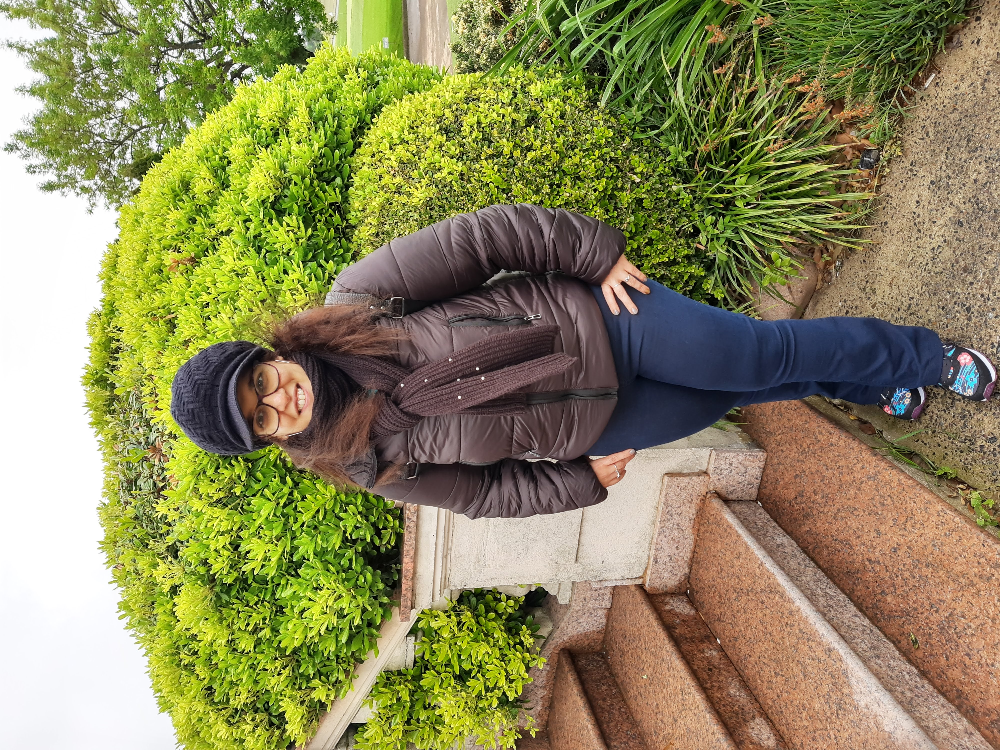
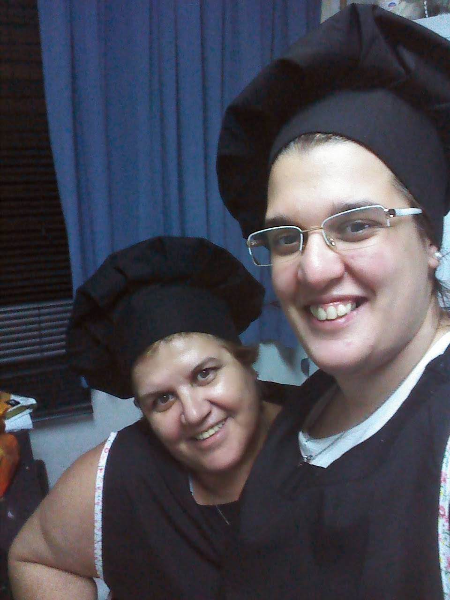
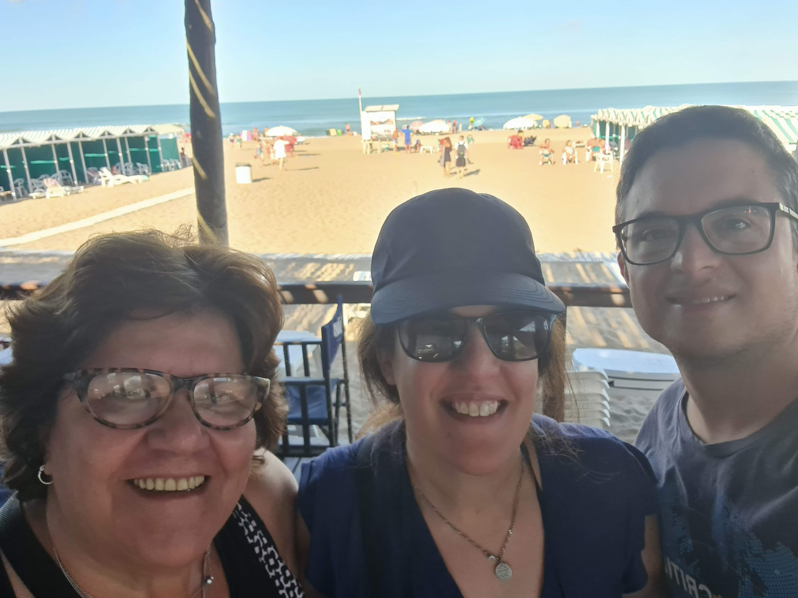
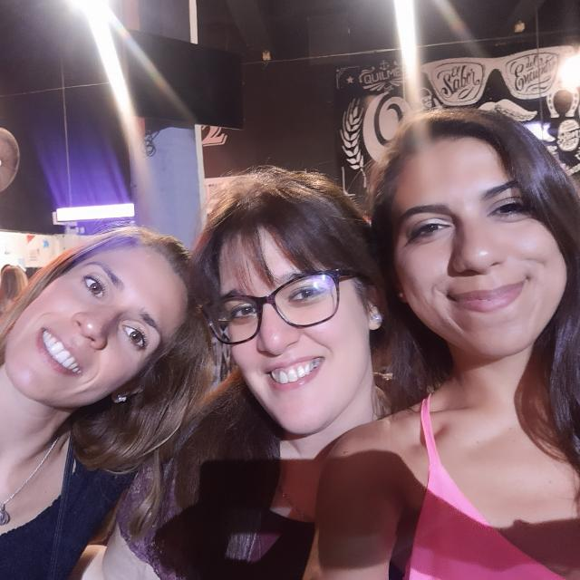

Verónica Bálsamo
En este blog contaré un poco sobre mi.

Soy Licenciada en Recursos Humanos, trabajo en Almundo como HRBP y Talent Acquisition.

Mi hobby es la pasteleria, junto a mi mamá en los tiempos libres, preparamos tortas y desayunos.
Mi Lugar preferido
Playa con familia y amigos
 
Linkedin